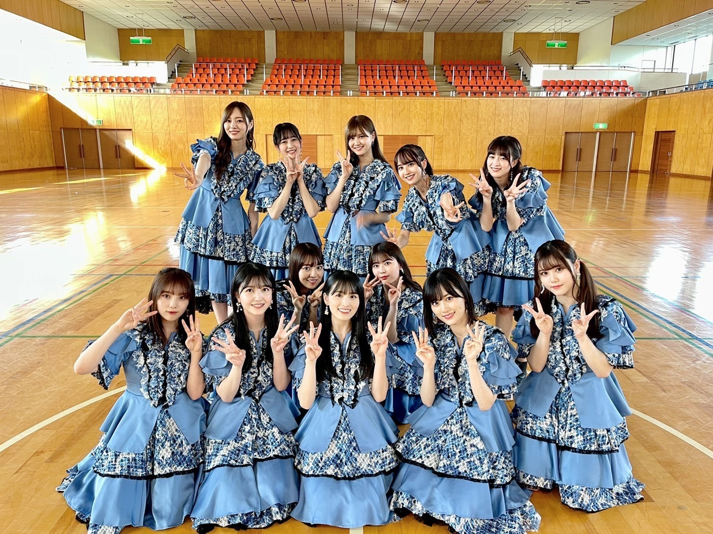
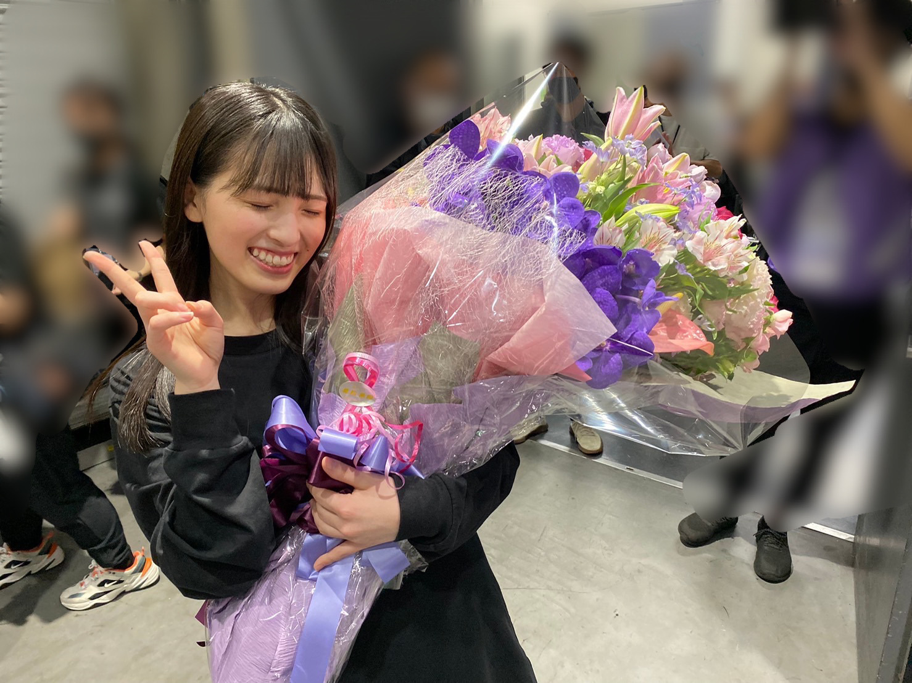

2021/0904Sat9月4日。
3期生5周年、おめでとう、！
大切な日に、
思い出ファーストのMVが
公開されました～

3期生の大好きな曲。
卒業前にMV撮影できたら幸せです、
と、お願いして。
わがままを叶えて頂きました。
撮影日が決まると、みんなで
楽しみだね、泣いちゃうねと話す
毎日がとても嬉しかったのです。
明日楽しもう！！と気合を入れて
眠ると、朝起きてなぜか胃が痛くて
撮影にご迷惑をかけてしまったりも
しましたが...
とても幸せな1日を過ごしました。
本当に楽しかったなぁ、
素敵な夏の思い出。
そして今日、私は乃木坂46としての
最後の日を過ごしました。
穏やかな気持ちで
卒業を迎えられたこと、
乃木坂を大好きになれたこと
よかったなと安心しています。
この5年間、
幸せが沢山ありました。
出会えてよかったなと
思える人が沢山います。

皆様、本当にありがとうございました。
大園桃子
2021/09/04 21:30
コメント(1315)
自分が乃木坂を知ったのが約2年前で桃子とれんたんの仲の良さに惹かれました。最初2人の絡みを見たのはらじらーでれんたんがゲストに来ていた時です。2人でいる時は特別いつもより元気な感じがして声を聞いているだけでこっちも笑顔になっちゃうくらい和みました。それから猫舌showroomとかで一緒になる時とかはすごい幸せだったし、お互いがお互いの話をしているのを聞くのがすごく楽しみでした。今でも仲の良さは変わらずお出かけしたりとかの話を耳にするだけで自分のことのように楽しい気持ちになってしまいます。人生で初めて行ったライブも乃木坂で2019年の桃子が復活した神宮のライブでした。今となってはすごい大事な思い出です！
いつも自分に対して弱気な桃子だけどやる時はすごいかっこよく可愛くすごいアイドルらしいところを見せれる桃子が大好きです！
ここまでアイドルを続けてくれてありがとう！
もし続けてなかったら自分が乃木坂を知る頃には桃子に出会えてなかったかもしれないし、続けててくれたおかげで今自分の生活がとても充実してます！
これからは自分が他人を幸せにするのではなく、自分のことを幸せにしてあげてください！
桃子の幸せを願っています！
卒業おめでとう！！
そして5年間お疲れ様でした！！！
いつも自分に対して弱気な桃子だけどやる時はすごいかっこよく可愛くすごいアイドルらしいところを見せれる桃子が大好きです！
ここまでアイドルを続けてくれてありがとう！
もし続けてなかったら自分が乃木坂を知る頃には桃子に出会えてなかったかもしれないし、続けててくれたおかげで今自分の生活がとても充実してます！
これからは自分が他人を幸せにするのではなく、自分のことを幸せにしてあげてください！
桃子の幸せを願っています！
卒業おめでとう！！
そして5年間お疲れ様でした！！！
桃子、卒業おめでとう。桃子の笑顔には何度も癒されました。乃木坂46の大園桃子を推せて本当によかった。これからは自分のペースで、自分のしたいことを存分にして、より幸せになってください。
5年間ありがとう。お疲れ様でした。
5年間ありがとう。お疲れ様でした。
ももちゃん。
卒業発表から今日まで2ヶ月。本当にあっという間だったね。
僕が乃木坂を好きになって、ももちゃんを好きになってたった2年ちょい。だけど好きになって良かったな、推しててよかったなって思ってます。最後にやりきったと言ってたのでよっぽど楽しい思い出が沢山作れたんだろうね。心残りなく出し切ったみたいで安心しました。ももちゃん、乃木坂に入ってくれてありがとう。
辛かった時期も多かったと思う。活動休止の期間も思い詰めたことも沢山あったと思います。僕はその時期の辛さを分かってあげることは残念ながらできません。どんな言葉も上辺だけの存在になりそうで何も言えないんですよね。それでも、最後までやり切ってくれて本当に僕は嬉しかった。卒業したら、普通の女の子として今まで出来なかったことをめいいっぱい楽しんでね。
僕が地元が近くて共通点が多かったからこそのこの出会い。本当に奇跡の連鎖だなぁって実感してます。そこで生まれてよかった、更に地元が好きになったのもあなたのおかげです、ありがとう。
ももちゃんが残してくれたものは数え切れないくらい沢山あるし、思い出も溢れる程あります。だからそれを決して忘れることなく、これからも過ごしていけたらいいなって思ってます。僕にとってももちゃんは最後まで最強で最高なアイドルだったよ。すっごくカッコよくて綺麗でした。
最後のももちゃんが参加したMV「思い出ファースト」
最後の3期生12人での思い出。みんなの夢が叶ってよかったね。見てるこっちも感動したし、何回も泣いちゃた。最後にこういった形で記録として残してくれて本当にありがとう。結成から今まで築き上げてきた関係がすべて詰まっててとても素敵だったなぁ。これからも寂しくなったら何回も見ようと思います。すっごい嬉しいサプライズプレゼントでした。3期生ってかけがえのない大切な存在だね。大切な大切なMVになりそうです。
今までの思い出を振り返るだけで涙が零れてしまい上手く言葉にすることができません…。これで本当に終わっちゃうんですね。笑って見送りたかったけど、やっぱり寂しいです。辛いです。
だけど最後にこれだけは言わせてください。
卒業しても影からずっと応援してるよ。
ずっと桃子推しです。だいすき。
これからの人生もきっと幸せになることを願ってます。この2年間大園桃子さんを推せて幸せでした。とっても楽しかった。
芸能生活5年間本当にお疲れ様。卒業おめでとう。
そして少し早いけど、誕生日おめでとう。
盆地産のひろとまと。
卒業発表から今日まで2ヶ月。本当にあっという間だったね。
僕が乃木坂を好きになって、ももちゃんを好きになってたった2年ちょい。だけど好きになって良かったな、推しててよかったなって思ってます。最後にやりきったと言ってたのでよっぽど楽しい思い出が沢山作れたんだろうね。心残りなく出し切ったみたいで安心しました。ももちゃん、乃木坂に入ってくれてありがとう。
辛かった時期も多かったと思う。活動休止の期間も思い詰めたことも沢山あったと思います。僕はその時期の辛さを分かってあげることは残念ながらできません。どんな言葉も上辺だけの存在になりそうで何も言えないんですよね。それでも、最後までやり切ってくれて本当に僕は嬉しかった。卒業したら、普通の女の子として今まで出来なかったことをめいいっぱい楽しんでね。
僕が地元が近くて共通点が多かったからこそのこの出会い。本当に奇跡の連鎖だなぁって実感してます。そこで生まれてよかった、更に地元が好きになったのもあなたのおかげです、ありがとう。
ももちゃんが残してくれたものは数え切れないくらい沢山あるし、思い出も溢れる程あります。だからそれを決して忘れることなく、これからも過ごしていけたらいいなって思ってます。僕にとってももちゃんは最後まで最強で最高なアイドルだったよ。すっごくカッコよくて綺麗でした。
最後のももちゃんが参加したMV「思い出ファースト」
最後の3期生12人での思い出。みんなの夢が叶ってよかったね。見てるこっちも感動したし、何回も泣いちゃた。最後にこういった形で記録として残してくれて本当にありがとう。結成から今まで築き上げてきた関係がすべて詰まっててとても素敵だったなぁ。これからも寂しくなったら何回も見ようと思います。すっごい嬉しいサプライズプレゼントでした。3期生ってかけがえのない大切な存在だね。大切な大切なMVになりそうです。
今までの思い出を振り返るだけで涙が零れてしまい上手く言葉にすることができません…。これで本当に終わっちゃうんですね。笑って見送りたかったけど、やっぱり寂しいです。辛いです。
だけど最後にこれだけは言わせてください。
卒業しても影からずっと応援してるよ。
ずっと桃子推しです。だいすき。
これからの人生もきっと幸せになることを願ってます。この2年間大園桃子さんを推せて幸せでした。とっても楽しかった。
芸能生活5年間本当にお疲れ様。卒業おめでとう。
そして少し早いけど、誕生日おめでとう。
盆地産のひろとまと。
桃子ブログ更新ありがと！
桃子のことを好きになって乃木坂が好きなりました！
桃子の純粋な笑顔が大好きです！桃子の頑張ってる姿に励まされました
もう桃子を見れなくなると思うと本当は悲しいけどどこかで今日も桃子が頑張ってるて思って応援してます！
これからも桃子が大好きです！
乃木坂に入ってくれてありがと！これからも桃子が幸せで入れますように！大好き！！
桃子のことを好きになって乃木坂が好きなりました！
桃子の純粋な笑顔が大好きです！桃子の頑張ってる姿に励まされました
もう桃子を見れなくなると思うと本当は悲しいけどどこかで今日も桃子が頑張ってるて思って応援してます！
これからも桃子が大好きです！
乃木坂に入ってくれてありがと！これからも桃子が幸せで入れますように！大好き！！
こんにちは。桃子ちゃん。
韓国人推し「ヒョンウン」です。
8/31桃子ちゃんとラストミーグリはとても楽しかったです。
最後までこんな形でも桃子と良い思い出作れられて良かった。
改めてありがとうございます。(o^^o)
画面に桃子が登場した時扇風機をあたってるんでしょう？
前髪が揺れる姿が本当に綺麗でアホげが良く見えて可愛かったです。
アイドルの桃子に会うのは最後だから私にとって印象に残った。
そして桃子はまだ韓国に行ったことがないから一人海外旅行地で
韓国おすすめしました。韓国はね。美味しい食べ物がいっぱい
あるからぜひ遊びに来てください。食べ物天国ですよ。笑
桃子ちゃんが‘韓国一番行きたい’って言ってくれて本当に
嬉しかったです。韓国は一人旅行でも難しくないから
挑戦してみて。凄く楽しいはずですよ。
トッポッキ、サムギョプサル、ユッケ、カルビチム、コプチャン
オススメします。韓国に行ったらぜひ食べてくださいね。
コロナが落ち着いたら私も曽於市行きます。私も曽於が一番
行ってみたいです。笑 桃子がおすすめしてくれた「鶏飯」
食べますよ。まだ食べたことがなくて写真で見ただけど
見た目がめっちゃ食欲が出てしまって美味しそうです。
凄く楽しみですね。( ^ω^ )
桃子にこれがラストだと言えた時は凄く寂しくて。。。。
でも自分なりに我慢して明るくて笑顔で桃子に挨拶をしたくて
頑張りました。桃子も良く聴いてくれてありがとうね！
桃子ちゃんが私に「韓国のアイドルは皆んなすっごい可愛いじゃん？
何で桃子なの？」聞いてくれてびっくりでしたね。頭では何々？って
迷ってその時は時間がなくて「桃子に会う瞬間首っ丈になった、
これは運命的かな」と言いましたね。
今ここに私が桃子の推しになった理由を詳しく話します。
5年前私は乃木坂っていうアイドルは知ってますけど
観に行ったことがなかった。ただネット動画で度々観ただけ。
その時3期生が登場してshowroomを始まった時桃子を知りました。
その時も桃子は全然アイドルのこと知らなく自然田舎女子高生で
緊張しそうに見えた。その時から応援していきたい気持ちは
ありましたがその後5thライブ観に日本に行きました。
現場で3期生デビュー瞬間を観てステージの上で泣いてる
桃子ちゃんを観てからこの子がずっと気になりました。
桃子が良く泣きちゃっても嫌いじゃなかった。桃子は本当に
純粋な人に見えてだんだん好感があがりました。
そして握手会にも行って実際桃子に会いました。私が観た
桃子ちゃんはめっちゃ明るくて元気な女の子で会った瞬間
めっちゃ可愛いと思いました。そこから桃子ちゃんの推しで
握手会、ライブに行ったりミーグリで桃子と良い思い出
作れて良かったです。(^ ^) 韓国には可愛いアイドルが多いかも
しれないけど大園桃子は世界で1人しかいないからそれでも
良いんじゃないですかね。これが言いたかった私の本音です。
桃子にちゃんと届くようになったら嬉しいですね。
そして桃子ちゃんといつかどこかで出会ったらっていう約束も
出来て良かったです。最後に桃子ちゃんに認知もらってるから
多分覚えてくれるんじゃないかって信じてます。笑
いつかまた会える日が来られるように
私も桃子みたいに頑張って幸せになれるように頑張ります。
応援してくれてありがとうございます。(^ ^)
卒業しても桃子はきっと平凡な女になって平凡に幸せに
なれるですよ。桃子がどこに行っても桃子はいつも
キラキラしてて皆んなに元気いっぱいくれてるからさz
改めて卒業おめでとうございます。今まで本当に
ありがとうございました。
これからもずっと大好きです。❤️
いつかまた会いましょう！
サランヘヨ(愛してるよ)
P.S.桃子が推しで誇りに思ってます。大好き！
是非韓国にも遊びに来てくださいね。
韓国人推し「ヒョンウン」です。
8/31桃子ちゃんとラストミーグリはとても楽しかったです。
最後までこんな形でも桃子と良い思い出作れられて良かった。
改めてありがとうございます。(o^^o)
画面に桃子が登場した時扇風機をあたってるんでしょう？
前髪が揺れる姿が本当に綺麗でアホげが良く見えて可愛かったです。
アイドルの桃子に会うのは最後だから私にとって印象に残った。
そして桃子はまだ韓国に行ったことがないから一人海外旅行地で
韓国おすすめしました。韓国はね。美味しい食べ物がいっぱい
あるからぜひ遊びに来てください。食べ物天国ですよ。笑
桃子ちゃんが‘韓国一番行きたい’って言ってくれて本当に
嬉しかったです。韓国は一人旅行でも難しくないから
挑戦してみて。凄く楽しいはずですよ。
トッポッキ、サムギョプサル、ユッケ、カルビチム、コプチャン
オススメします。韓国に行ったらぜひ食べてくださいね。
コロナが落ち着いたら私も曽於市行きます。私も曽於が一番
行ってみたいです。笑 桃子がおすすめしてくれた「鶏飯」
食べますよ。まだ食べたことがなくて写真で見ただけど
見た目がめっちゃ食欲が出てしまって美味しそうです。
凄く楽しみですね。( ^ω^ )
桃子にこれがラストだと言えた時は凄く寂しくて。。。。
でも自分なりに我慢して明るくて笑顔で桃子に挨拶をしたくて
頑張りました。桃子も良く聴いてくれてありがとうね！
桃子ちゃんが私に「韓国のアイドルは皆んなすっごい可愛いじゃん？
何で桃子なの？」聞いてくれてびっくりでしたね。頭では何々？って
迷ってその時は時間がなくて「桃子に会う瞬間首っ丈になった、
これは運命的かな」と言いましたね。
今ここに私が桃子の推しになった理由を詳しく話します。
5年前私は乃木坂っていうアイドルは知ってますけど
観に行ったことがなかった。ただネット動画で度々観ただけ。
その時3期生が登場してshowroomを始まった時桃子を知りました。
その時も桃子は全然アイドルのこと知らなく自然田舎女子高生で
緊張しそうに見えた。その時から応援していきたい気持ちは
ありましたがその後5thライブ観に日本に行きました。
現場で3期生デビュー瞬間を観てステージの上で泣いてる
桃子ちゃんを観てからこの子がずっと気になりました。
桃子が良く泣きちゃっても嫌いじゃなかった。桃子は本当に
純粋な人に見えてだんだん好感があがりました。
そして握手会にも行って実際桃子に会いました。私が観た
桃子ちゃんはめっちゃ明るくて元気な女の子で会った瞬間
めっちゃ可愛いと思いました。そこから桃子ちゃんの推しで
握手会、ライブに行ったりミーグリで桃子と良い思い出
作れて良かったです。(^ ^) 韓国には可愛いアイドルが多いかも
しれないけど大園桃子は世界で1人しかいないからそれでも
良いんじゃないですかね。これが言いたかった私の本音です。
桃子にちゃんと届くようになったら嬉しいですね。
そして桃子ちゃんといつかどこかで出会ったらっていう約束も
出来て良かったです。最後に桃子ちゃんに認知もらってるから
多分覚えてくれるんじゃないかって信じてます。笑
いつかまた会える日が来られるように
私も桃子みたいに頑張って幸せになれるように頑張ります。
応援してくれてありがとうございます。(^ ^)
卒業しても桃子はきっと平凡な女になって平凡に幸せに
なれるですよ。桃子がどこに行っても桃子はいつも
キラキラしてて皆んなに元気いっぱいくれてるからさz
改めて卒業おめでとうございます。今まで本当に
ありがとうございました。
これからもずっと大好きです。❤️
いつかまた会いましょう！
サランヘヨ(愛してるよ)
P.S.桃子が推しで誇りに思ってます。大好き！
是非韓国にも遊びに来てくださいね。
ももちゃんだいすき。ほんとに幸せになってね。
ももこだいすきです！！
ももこありがとう。
ももちゃんのこれからの人生が幸せでありますように。
今までよく頑張りました！おつかれさま。
卒業、おめでとう！
今までよく頑張りました！おつかれさま。
卒業、おめでとう！
桃ちゃん本当に5年間お疲れ様でした。
大変なこともいっぱいあったかもしれないけど本当に5年間続けてくれてありがとうございます！
大大大好きです！
卒業してからも大好きです！
ほんとに幸せになってください！！
大変なこともいっぱいあったかもしれないけど本当に5年間続けてくれてありがとうございます！
大大大好きです！
卒業してからも大好きです！
ほんとに幸せになってください！！
桃子お疲れ様でした！
たくさんの笑顔をありがとうね
しあわせでいてね
たくさんの笑顔をありがとうね
しあわせでいてね
ももこ卒業おめでとう
5年間お疲れ様！！
ももこ絶対幸せになってね！
5年間お疲れ様！！
ももこ絶対幸せになってね！
桃ちゃん、卒業おめでとう。
５年間本当にお疲れさまでした。
大好きな桃ちゃんがテレビやライブで
輝いている姿をみていつも元気をもらい
毎日楽しく過ごすことができました。
本当にありがとうございました。
これからもずっと桃ちゃんを応援し続けます
くれぐれもお体にはお気を付ください。
５年間本当にお疲れさまでした。
大好きな桃ちゃんがテレビやライブで
輝いている姿をみていつも元気をもらい
毎日楽しく過ごすことができました。
本当にありがとうございました。
これからもずっと桃ちゃんを応援し続けます
くれぐれもお体にはお気を付ください。
本当に桃子5年間ありがとう。桃子に出会えて最高の時間を過ごせて幸せでした。きっとしんどいこともたくさんあったと思う。けれどここまで続けてくれたことがなにより嬉しいです。あなたは最高で最強だ。大好きです。本当にありがとう。
桃子ぉぉぉぉぉぉ！！！ありがとう！！！！
お疲れ様でした！！！
またどこかで！
お疲れ様でした！！！
またどこかで！
桃子ぉぉぉぉぉぉ！！！ありがとう！！！！
お疲れ様でした！！！
またどこかで！
お疲れ様でした！！！
またどこかで！
桃子ブログ更新ありがとう！
桃子の素敵な笑顔たくさん幸せをもらいました。
今度は桃子がたくさん幸せを感じてください！！
5年間お疲れ様でした！
桃子の素敵な笑顔たくさん幸せをもらいました。
今度は桃子がたくさん幸せを感じてください！！
5年間お疲れ様でした！
桃子ブログ更新ありがとう！
桃子の素敵な笑顔たくさん幸せをもらいました。
今度は桃子がたくさん幸せを感じてください！！
5年間お疲れ様でした！
桃子の素敵な笑顔たくさん幸せをもらいました。
今度は桃子がたくさん幸せを感じてください！！
5年間お疲れ様でした！
桃子5年間お疲れ様！そして本当にありがとう！
桃子に出会えて本当に良かった！3期生として乃木坂に入ってきてくれて本当にありがとう！同い年の桃子を見ていつも元気づけられてました！これからもずっと応援してます！そして絶対幸せになってください！桃子大好きだよ！
桃子に出会えて本当に良かった！3期生として乃木坂に入ってきてくれて本当にありがとう！同い年の桃子を見ていつも元気づけられてました！これからもずっと応援してます！そして絶対幸せになってください！桃子大好きだよ！
出逢えて良かったです。どうか幸せになってください。
あっぴ
あっぴ
ももちゃんおめでとう

寂しくなるけどメンバーが言ってたように誰よりも幸せになってね
大好き
今までたくさんの笑顔と幸せをありがとう
寂しくなるけどメンバーが言ってたように誰よりも幸せになってね
大好き
今までたくさんの笑顔と幸せをありがとう
ももちゃんおめでとう
寂しくなるけどメンバーが言ってたように誰よりも幸せになってね
大好き
今までたくさんの笑顔と幸せをありがとう
寂しくなるけどメンバーが言ってたように誰よりも幸せになってね
大好き
今までたくさんの笑顔と幸せをありがとう
桃ちゃん
ご卒業おめでとうございます。
とても素敵な5年間でした。ありがとう！
これからも実り多き日々を過ごせますように。
お元気で！
ご卒業おめでとうございます。
とても素敵な5年間でした。ありがとう！
これからも実り多き日々を過ごせますように。
お元気で！
桃ちゃん。ずっとずっーーと大好きです。桃ちゃんの笑顔で何回も救われました。桃ちゃんの素の笑顔が大好きです！ずっーーと笑顔で幸せに過ごしてください！応援してます！大好きです
最高の時間を、そして最後に最高の配信とMVを本当にありがとうございました。
桃ちゃんが乃木坂になってくれて、本当に幸せでした。
5年間お疲れ様でした。
そして、これからもずっと幸せでいてください！
ご卒業おめでとうございます。
2021.09.04 言霊砲弾カズマ
桃ちゃんが乃木坂になってくれて、本当に幸せでした。
5年間お疲れ様でした。
そして、これからもずっと幸せでいてください！
ご卒業おめでとうございます。
2021.09.04 言霊砲弾カズマ
ももこ卒業おめでとうございます
さっき配信見てて色んな写真そして思い出ファーストのmvが感動しました。これからも幸せになってくださいそしてこれからも応援してます。
さっき配信見てて色んな写真そして思い出ファーストのmvが感動しました。これからも幸せになってくださいそしてこれからも応援してます。
卒業おめでとう！！！
5年間お疲れ様でした！
桃ちゃん、ずっとずっと大好きです！！！！
幸せになってね
5年間お疲れ様でした！
桃ちゃん、ずっとずっと大好きです！！！！
幸せになってね
ももちゃん、５年間ありがとう。
大好きでした。そしてこれからも大好きです。
幸せになってね。ずっと笑顔で暮らしてください。
ずっと応援しています。
大好きでした。そしてこれからも大好きです。
幸せになってね。ずっと笑顔で暮らしてください。
ずっと応援しています。
桃子、5年間も乃木坂にいてくれてありがとう。たくさんの思い出をありがとう。誰よりも幸せになってね。5年間おつかれさまでした。大好きです。
桃子、5年間も乃木坂にいてくれてありがとう。たくさんの思い出をありがとう。誰よりも幸せになってね。5年間おつかれさまでした。大好きです。
桃子5年間ありがとう
よだももがとても好きでした
卒業した後もよだももがずっと好きです
与田ももよ永遠に！！
よだももがとても好きでした
卒業した後もよだももがずっと好きです
与田ももよ永遠に！！
桃ちゃん5年間お疲れ様！
桃ちゃんと出会えて本当に良かった。
大好きです。
桃ちゃんが元気で幸せでありますように、これからも応援しています！
本当にありがとう！
桃ちゃんと出会えて本当に良かった。
大好きです。
桃ちゃんが元気で幸せでありますように、これからも応援しています！
本当にありがとう！
今までありがとうございました。
桃子さんこれからもずっと大好きです❤️
幸せになって(^ ^)
桃子さんこれからもずっと大好きです❤️
幸せになって(^ ^)
桃ちゃん5年間本当に本当に本当にありがとう、そしてお疲れさまでした。回数は決して多くなかったけど毎回桃ちゃんとお話できることが楽しみで幸せでした。
これからもずっーーと応援してるね。ありがとう。大好き！！！
これからもずっーーと応援してるね。ありがとう。大好き！！！
桃子お疲れ様。桃子に出会えてよかった。
思い出ファーストのMV4年越しにつくれて本当によかったね。何回も見返すね。どうか幸せになってください。
卒業しても芸能界を引退してもずっとずっと応援しています。大好きです。
思い出ファーストのMV4年越しにつくれて本当によかったね。何回も見返すね。どうか幸せになってください。
卒業しても芸能界を引退してもずっとずっと応援しています。大好きです。
ももちゃん5年間ほんとうにお疲れ様でした！
ずっと頑張ってくれてありがとう。
ももちゃんに出逢えてほんとうによかったです、、5年間幸せをありがとう。ずっとずっとだいすきです！わたしの推しはももちゃんです！
ももちゃんのこれからが幸せであふれていますように
ずっと頑張ってくれてありがとう。
ももちゃんに出逢えてほんとうによかったです、、5年間幸せをありがとう。ずっとずっとだいすきです！わたしの推しはももちゃんです！
ももちゃんのこれからが幸せであふれていますように
ももちゃん本当にお疲れさまでした！
これからもたくさん応援してます！
ずっとずっと大好きです♡
これからもたくさん応援してます！
ずっとずっと大好きです♡
桃ちゃん5年間お疲れ様でした！
3期生12人の絆は永遠です！
桃ちゃんのこれからが幸せで溢れるものとなりますように！
3期生12人の絆は永遠です！
桃ちゃんのこれからが幸せで溢れるものとなりますように！
桃ちゃん卒業おめでとう。
5年間お疲れ様でした。
桃ちゃんを知って、好きになれて幸せです。
ずっと幸せでいてください。
本当に大好きです❤︎
5年間お疲れ様でした。
桃ちゃんを知って、好きになれて幸せです。
ずっと幸せでいてください。
本当に大好きです❤︎
桃子5年間お疲れ様でした！
本当に桃子は頑張ってたよ！
卒業しても明るくて楽しくなる桃子らしく過ごしてほしい！
1番は本当に幸せになってほしい！
桃子、卒業おめでとう㊗️
本当に桃子は頑張ってたよ！
卒業しても明るくて楽しくなる桃子らしく過ごしてほしい！
1番は本当に幸せになってほしい！
桃子、卒業おめでとう㊗️
桃ちゃん今までありがとう！
5年間お疲れ様でした！
桃ちゃんを応援できて本当に本当に楽しかったです。
とにかく、健康でいて下さい。
5年間お疲れ様でした！
桃ちゃんを応援できて本当に本当に楽しかったです。
とにかく、健康でいて下さい。
乃木坂でいてくれて、本当にありがとう。そしてお疲れ様。いつも明るくて素敵な桃子が大好きです。もう会えないと思うけど、これからも陰ながら応援しています。本当にありがとう
桃ちゃんずっとずっと大好きだよ！卒業おめでとう！
ももちゃん、5年間ありがとう！
ももちゃんにはたくさん感謝してます！
いっぱい幸せになってね(^^)
卒業おめでとうございます(^^)
ももちゃんにはたくさん感謝してます！
いっぱい幸せになってね(^^)
卒業おめでとうございます(^^)
こちらこそありがとう！桃子に出逢えた人生で本当によかったです\♥︎︎/
これから先の人生、絶対絶対誰よりもしあわせになってね☺︎
生涯大好きです♡
卒業おめでとう。5年間、本当にお疲れ様でした。
これから先の人生、絶対絶対誰よりもしあわせになってね☺︎
生涯大好きです♡
卒業おめでとう。5年間、本当にお疲れ様でした。
卒業おめでとうございます
5年間長いようであっという間でした。
乃木坂46の3期生でいてくれてありがとう！
またいつか、会えることを祈ってます。
これからも充実した人生を！お幸せに！
5年間長いようであっという間でした。
乃木坂46の3期生でいてくれてありがとう！
またいつか、会えることを祈ってます。
これからも充実した人生を！お幸せに！
乃木坂でいてくれて、本当にありがとう。そしてお疲れ様。いつも明るくて素敵な桃子が大好きです。もう会えないと思うけど、これからも陰ながら応援しています。本当にありがとう
桃子卒業おめでとう！そしてお疲れ様でした！
これからも楽しく幸せな日々を送ってください。
桃子、乃木坂に入ってくれてありがとう。
これからも楽しく幸せな日々を送ってください。
桃子、乃木坂に入ってくれてありがとう。
今まで本当にお疲れ様でした。
桃子さんの笑顔がとても素敵でした。僕たちファンにはわからないことが多くあったと思いますが今までみんなに笑顔をくれて本当にありがとうございました。これからも応援してます！
絶対幸せになってください！
大好きです！
桃子さんの笑顔がとても素敵でした。僕たちファンにはわからないことが多くあったと思いますが今までみんなに笑顔をくれて本当にありがとうございました。これからも応援してます！
絶対幸せになってください！
大好きです！


だからこそ、これからももちゃんがいなくなって11人になる3期生を考えたら涙がとまらないよ。
だけど、ももちゃんが残してくれたもの、これからの3期生のことを大切にして応援していきたいって思う！
だからこそ、これまで本当にありがとう！
これからのももちゃんの幸せを願ってます！
これからは一緒に乃木坂を応援していこうね！